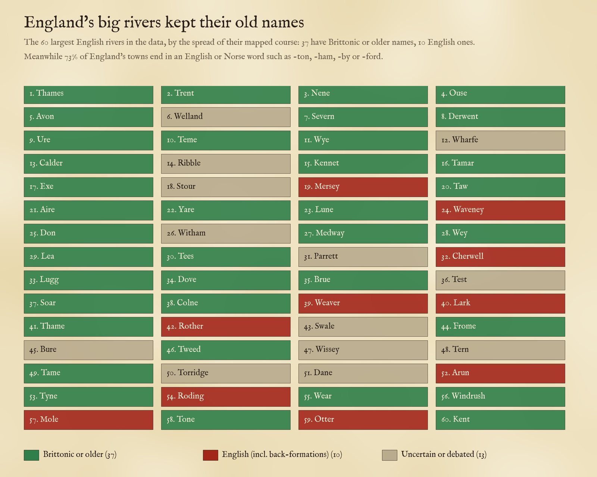
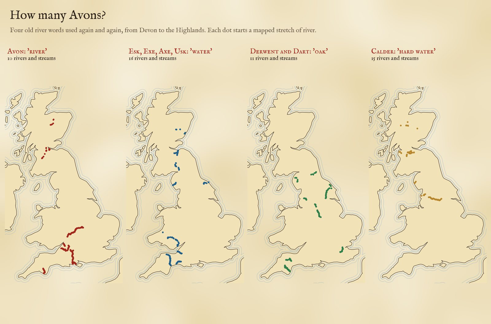
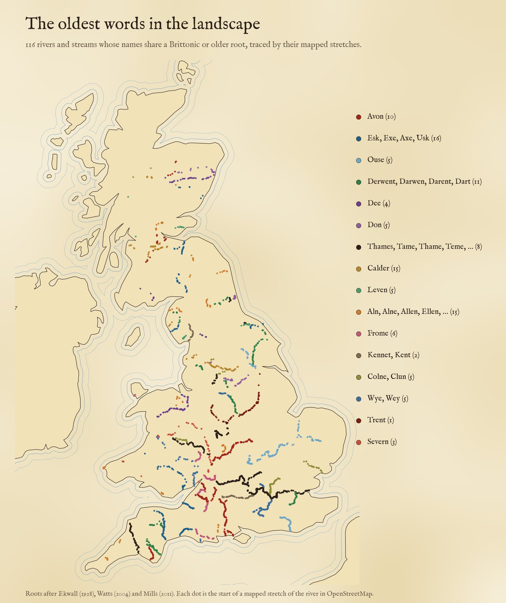
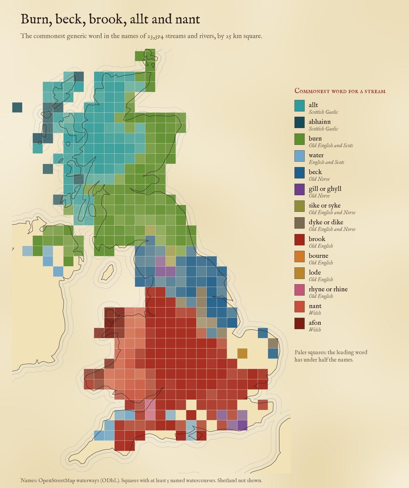
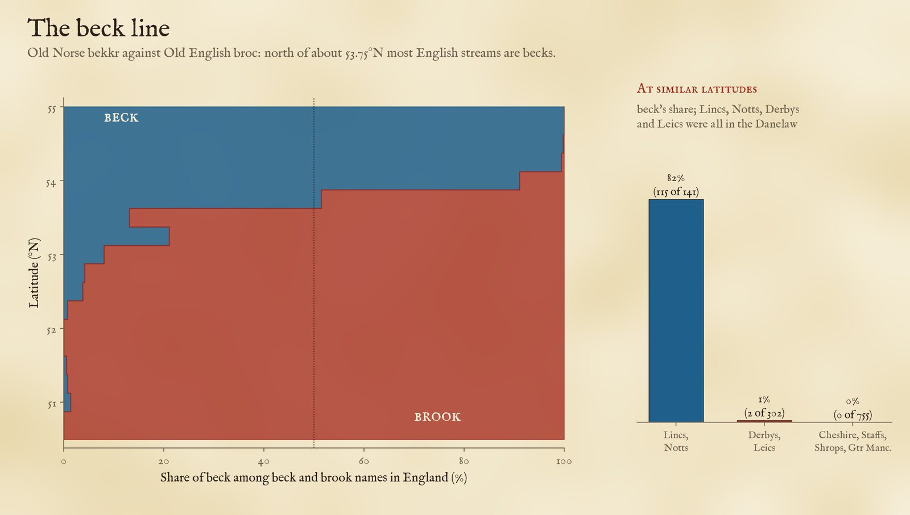

River names are among the oldest words in Britain. 32,068 named rivers and streams, by the word they use for a stream, or by the ancient root of their name. Tap any dot.
Stand on the bridge at Stratford-upon-Avon and you are, in effect, standing above the River River. Avon is the Brittonic word for a river, the same as Welsh afon, and when English speakers arrived they took it for a name. They kept the names of most of England's big rivers in the same way, while renaming almost everything else. I took 32,068 named rivers and streams from OpenStreetMap and mapped them by the words in their names: the old roots underneath, and the everyday words on top, burn, beck, brook, allt and nant, which change as you cross the old frontiers of language.
Use the buttons to switch between the stream words and the old roots, and to pick a word or a root. Tap any dot to read the name.
England's place names are overwhelmingly English. Of 1,184 towns and cities in England in OpenStreetMap, 73% have a first word ending in a plain English or Norse element: -ton, -ham, -ley, -bury, -ford, -by, -thorpe, -wick and the like. The rivers that run through them are another matter. Of the 60 largest English rivers in the data, by the spread of their mapped course, 37 have names that the place-name scholars trace to Brittonic or something older still: Thames, Trent, Severn, Avon, Ouse, Derwent, Exe, Tamar, Tees, Tyne. 10 have English names, and several of those are back-formations made centuries later from a town (the Arun from Arundel, the Rother from Rotherfield, the Mole from Molesey, the Lark from Lackford). The other 13 are debated. Of the ten largest, 9 are pre-English.

The 60 largest English rivers in the data and the origin of their names, after Ekwall (1928) and Watts (2004).
Often the newcomers named their towns after the river: Exeter on the Exe, Dartmouth and Dartington on the Dart, Alnwick on the Aln, Tynemouth, Doncaster on the Don, Thame, Frome and Usk. I found 123 towns and villages within 6 km of 45 old-named rivers that carry the river's name. (Sometimes it runs the other way: a few rivers were named from their towns, so treat any single case with care.)
Some roots appear again and again. There are 10 rivers and streams called Avon in the data: the Warwickshire Avon of Stratford, the Bristol Avon, the Hampshire Avon through Salisbury, the Devon Avon, and in Scotland the Avon of Speyside and the Avon of Falkirk among them. There are 10 called Esk, from Eskdale in Cumbria to the North and South Esks of Angus, which share a root usually read as "water" with the Exe, the Axe and the Usk. 6 Derwents, Darwens and Darents (with the Dart, 11) are "rivers where oaks grow". There are 15 Calders, "hard" or rocky waters, and Dees, Dons, Levens, Fromes and Colnes besides.

Four old river words. Each dot starts a mapped stretch of a river with that root.

116 rivers and streams in sixteen root groups, after Ekwall (1928).
The specific names are old; the words people put beside them are the ones they spoke. Of the named streams with a generic word, the commonest are burn (5,792), allt (4,263), brook (3,284), beck (2,969), gill (1,760) and nant (1,480). Mapped, they draw the old language frontiers. In Wales, 86% of the streams named with nant, afon, brook or river are a nant or an afon. In Scotland, Gaelic allt and abhainn make up 86% of the allt, abhainn, burn and water names in Highland and 99% in the Western Isles but none at all in the Borders or Dumfries and Galloway, where streams are burns, waters and sikes. (Galloway's Gaelic past shows in other ways, in stream names such as Polmaddy Burn from Gaelic poll.) In England, the Somerset Levels drain through rhynes (26 of them) and the Fens through lodes.

The commonest word for a stream in each 25 km square.
Beck is the Old Norse bekkr, brook the Old English brōc. North of about 53.75°N most English streams are becks. But the line is not just a matter of latitude. Compare streams in Lincolnshire and Nottinghamshire with Cheshire, Staffordshire, Shropshire and Greater Manchester at much the same latitude: 82% of the eastern streams are becks (115 becks to 26 brooks), against 0% in the west, where the map has not one beck among 755 brooks. Lincolnshire's streams are 96% becks, Norfolk's 95%. Yet Derbyshire and Leicestershire, which lay inside the Danelaw too, are brook country (2 becks to 300 brooks), so the beck follows where Norse speakers settled thickly, not the political frontier.

Beck against brook by latitude (left) and in eastern and western counties at the same latitude (right).
Rivers. OpenStreetMap maps rivers as many short stretches. I took 128,210 named stretches of river, stream and canal in the UK and joined stretches with the same name whose start points chain together (within 15 km for rivers, 4 km for streams) into 32,068 named watercourses. For the rivers in the root groups I then checked every piece by eye and assigned it to its river by hand, because OpenStreetMap often splits one river (into a "stream" upper course, a Welsh name, or pieces with gaps) and sometimes two rivers of one name lie close together.
Words. Each name was split into a generic word (River, Afon, Allt, Burn of, before the name; Brook, Beck, Burn, Water, Gill, Sike, Dyke, Rhyne, Lode after it; and one-word names such as Holbeck) and the specific name. Roots are matched on the specific name with qualifiers such as Little or North removed, using sixteen root groups from Ekwall's English River-Names (1928), with Watts (2004) and Mills (2011); I removed false friends by hand (Kent Water and Kent Ditch are named after the county, not the Cumbrian Kent) and the decisions are in the data. The origins of the 60 largest English rivers are from the same works.
What this cannot say. River-name etymology is one of the most debated corners of place-name study, and I have used the standard readings without re-examining early spellings: meanings such as "dark" for Thames and Tame are disputed, and I mark them so. OpenStreetMap's coverage of small streams is uneven, and many small streams have no name in it. The size ranking uses the spread of mapped stretches, not true length, so a long river mapped in a few long stretches, such as the Eden in Cumbria, can fall out of the 60. The town comparison only reads the end of the first word. Treat single names as leads, and the patterns as the finding.